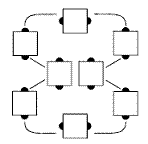

From an hourglass: Each dancer does a Circulate by moving forward one position in the hourglass, to take that dancer's place. Dancers move along the path shown:

Points become centers, and centers become points. Also, the diamond dancers move to the box, and the box dancers move to the diamond.
For Teaching: Tell each dancer to move up to the next person's spot in the hourglass, taking his footsteps. During this call, everyone keeps the same shoulder toward the center of the set. This is a good call for using a demonstration square.
Timing: 4
© Copyright 1982, 1986-1988, 1995, 2001-2015. Bill Davis, John Sybalsky, and CALLERLAB Inc., The International Association of Square Dance Callers. Permission to reprint, republish, and create derivative works without royalty is hereby granted, provided this notice appears. Publication on the Internet of derivative works without royalty is hereby granted provided this notice appears. Permission to quote parts or all of this document without royalty is hereby granted, provided this notice is included. Information contained herein shall not be changed nor revised in any derivation or publication.